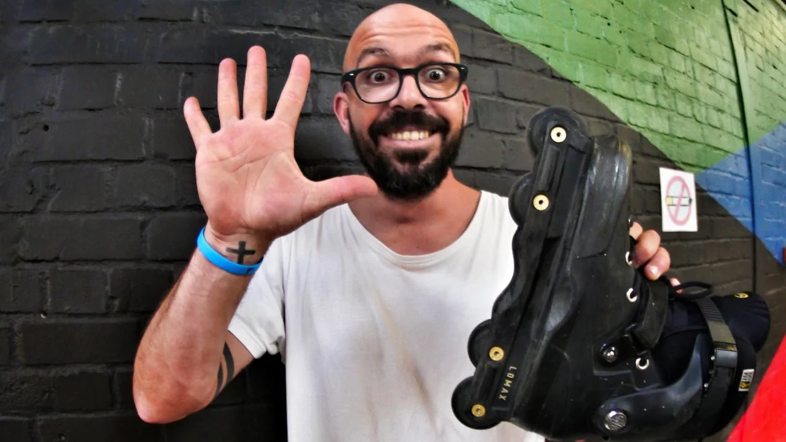
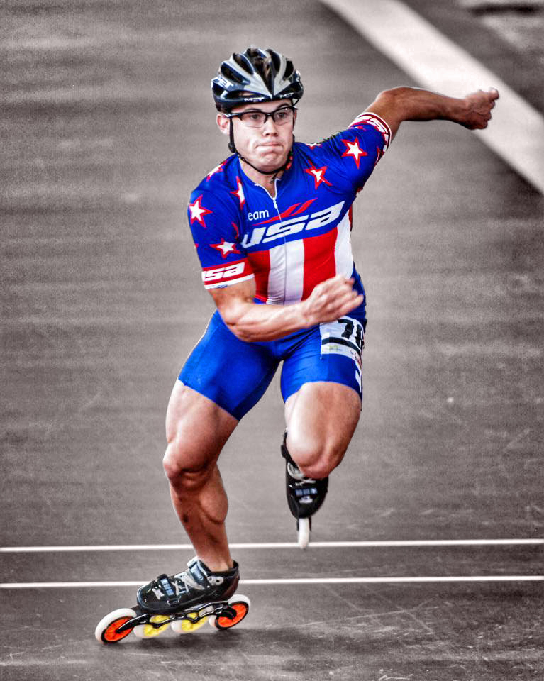
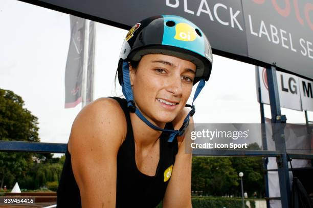
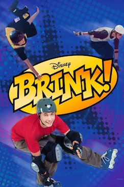
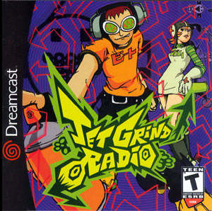

O que é a Patinação Inline?
A patinação inline é uma modalidade onde os patins possuem rodas dispostas em uma única linha reta. Diferente dos patins tradicionais (quad), o design inline simula a sensação de deslizar no gelo, sendo ideal para superfícies urbanas, asfalto e pistas de alta performance.
É uma atividade versátil que abrange desde o transporte sustentável e lazer em parques até competições extremas de velocidade e acrobacias em ambientes urbanos.
Categorias de Patinação Inline
-
Urban e Slalom:
Focada em manobras técnicas, desvio de obstáculos e exploração da cidade.
O Slalom exige precisão milimétrica para desviar de cones com coreografias rápidas, enquanto o Urban foca na superação de obstáculos urbanos como escadas e corrimãos.
Maiores AtletasRicardo Lino é um dos maiores nomes mundiais da patinação urbana. Além de sua técnica impecável, ele é um grande influenciador que promove a cultura dos patins ao redor do mundo.

-
Velocidade (Speed Skating):
Onde o foco total é a aerodinâmica e o tempo, geralmente praticada em pistas ovais.
Nesta categoria, os patins utilizam rodas maiores (até 125mm) e botas de cano baixo feitas de fibra de carbono para garantir a máxima leveza.
Maiores AtletasJoey Mantia é um multicampeão mundial de patinação de velocidade inline que também teve sucesso nas Olimpíadas de Inverno.

-
Aggressive (Street/Park):
Modalidade extrema focada em manobras de impacto, grinds em corrimãos e saltos em rampas.
Os patins de aggressive possuem rodas pequenas e uma base reforçada (H-Block) especialmente desenhada para deslizar em quinas.
Maiores AtletasFabiola da Silva é uma lenda brasileira e mundial do patins aggressive, com diversos títulos no X Games e pioneira no esporte.

Importância Cultural
A patinação inline é um pilar da cultura urbana moderna. Ela promove um estilo de vida saudável, o convívio social em espaços públicos e serve como uma alternativa ecológica de mobilidade.
História
Embora existam registros de patins em linha desde o século XVIII, a patinação inline moderna explodiu nos anos 80 com a popularização da marca Rollerblade.
Impacto na Mídia e Cultura Pop
Nos anos 90, o filme da Disney "Brink!" marcou uma geração, retratando a rivalidade entre patinadores.

O videogame "Jet Set Radio" também ajudou a popularizar a estética da patinação inline misturada com grafite e música eletrônica.
